Code
myfolder<-"U:/Documents/BIOL3722_2026/"
if (!dir.exists(myfolder)) {
dir.create(myfolder)
}SNP-based QC, diversity, relatedness, and breeding-group selection
This lab walks through a typical population-genomics quality-control (QC) and relatedness workflow, starting from a VCF (Variant Call Format) file of SNP genotypes generated by ddRAD sequencing.
By the end of this lab you should be able to:
The workflow covers:
swingeRAll computer lab materials (this document’s source, example data, and the swingeR package) are available from:
https://yuma248.github.io/Captive-management-and-restoration-genetics-series-2026/
.R) or documents (.qmd). Code here doesn’t run until you send it to the console, but it’s the only place your code is actually saved.
Two beginner-friendly guides if you want more detail:
Create a new folder on your machine, e.g.:
myfolder<-"U:/Documents/BIOL3722_2026/"
if (!dir.exists(myfolder)) {
dir.create(myfolder)
}Set your working directory to the folder we just created, so relative file paths (used throughout this document) resolve correctly.
getwd()
setwd("U:/Documents/BIOL3722_2026/")Now download the input files needed for this lab.
inputfiles <- c("SPBR_50_6328.vcf.gz", "SPBRmeta.txt")
YumaGH <- "https://raw.githubusercontent.com/Yuma248/Captive-management-and-restoration-genetics-series-2026/main/data/"
for (i in inputfiles) {
fullpath <- paste0(YumaGH, i)
download.file(fullpath, destfile = i, mode = "wb")
}Confirm the files downloaded correctly:
list.files() [1] "_quarto.yml" "CEG_CopLab.RData" "data"
[4] "docs" "images" "index.qmd"
[7] "index.rmarkdown" "README.md" "SPBR_50_6328.gds"
[10] "SPBR_50_6328.vcf.gz" "SPBRmeta.txt" "swingeR_0.4.0.tar.gz"
[13] "vcf-tutorial.Rproj" The following commands install all the R packages we are using for this lab; these packages are already installed on the lab computers. So, no need to run this part now, but if you need to working on your own computer, run the block below once.
The swingeR package (used for breeding-group selection) is available here:
Described here:
if (!requireNamespace("BiocManager", quietly = TRUE)) install.packages("BiocManager")
pkgs <- c("vcfR", "ggplot2", "dplyr", "tidyr", "patchwork", "reshape2",
"tidyverse", "vegan", "dartR.base", "dartR.popgen", "adegenet",
"SNPRelate", "gdsfmt", "hierfstat", "visNetwork", "remotes")
for (p in pkgs) {
if (!requireNamespace(p, quietly = TRUE)) {
if (p %in% c("vcfR", "SNPRelate", "gdsfmt")) {
BiocManager::install(p)
} else {
install.packages(p)
}
}
}
remotes::install_github("Yuma248/swingeR")Now load everything for the session:
library(swingeR)
library(vcfR)
library(ggplot2)
library(dplyr)
library(dartR.base)
library(dartR.popgen)
library(tidyverse)
library(vegan)
library(tidyr)
library(patchwork)
library(reshape2)
library(SNPRelate)
library(hierfstat)
library(visNetwork)Declare file paths once, so they’re easy to change and don’t need to be repeated throughout the document.
vcffile <- "SPBR_50_6328.vcf.gz"
gdsfile <- "SPBR_50_6328.gds"
metafile <- "SPBRmeta.txt"We need two files:
vcf <- read.vcfR(vcffile, verbose = FALSE)
meta <- read.table(metafile, header = TRUE, sep = "\t")
vcf***** Object of Class vcfR *****
50 samples
30 CHROMs
6,328 variants
Object size: 3.5 Mb
0 percent missing data
***** ***** *****This dataset contains genome-wide variants (SNPS) generated using double-digest Restriction-site Associated DNA sequencing (ddRAD-seq) from 50 Southern Pygmy Perch (Nannoperca australis) individuals sampled as part of the MELFU Flinders University captive breeding program. After quality filtering, the dataset includes 6,328 high-quality genetic variants distributed across 24 chromosomes and 6 unmapped scaffolds. This dataset provides a robust representation of genome-wide genetic variation and is suitable for estimating relatedness, inbreeding, and genetic diversity to inform breeding management decisions.
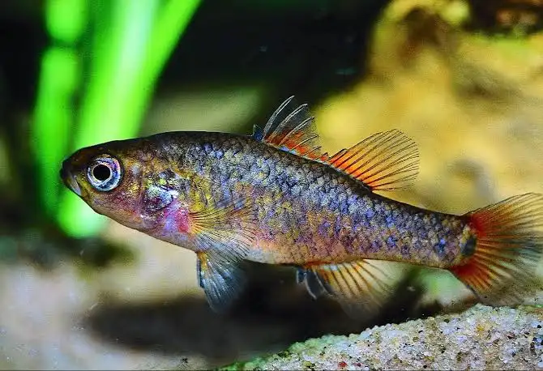
High-throughput sequencing enables detection and characterisation of millions of sequence variants, most commonly single nucleotide polymorphisms (SNPs). After variant discovery, quality control (QC) is essential to ensure genotype calls are accurate and reliable — poor QC increases the risk of spurious results in every downstream analysis that follows.
We’ll check four things:
QUAL is a Phred-scaled score representing the site-level confidence that a variant genuinely exists at that position (as opposed to being a sequencing/mapping artefact) — higher QUAL means greater confidence. Phred scaling is logarithmic: QUAL = 20 corresponds to a 1% probability the call is wrong, QUAL = 30 corresponds to 0.1%, and so on.
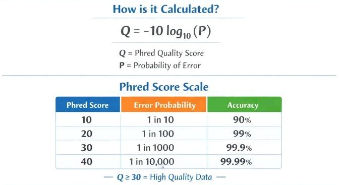
ourSNPs <- vcf2df(vcf)
qd_df <- data.frame(QD = ourSNPs$QUAL_num[is.finite(ourSNPs$QUAL_num)])
ggplot(qd_df, aes(x = QD)) +
geom_histogram(bins = 100, fill = "#8172B2", colour = "white") +
xlim(0, 5000) +
labs(x = "QUAL", y = "Count") +
theme_bw(base_size = 12)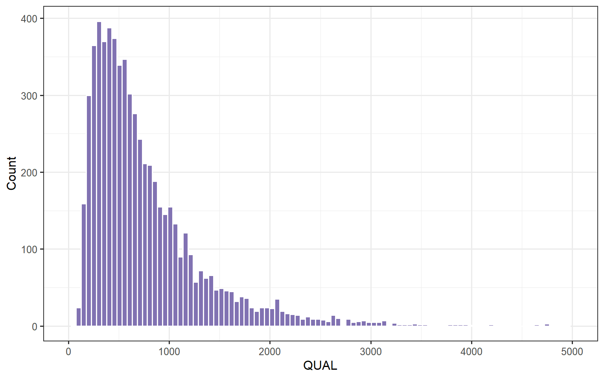
Quality scaled by sequencing depth (QUAL / DP) is often a more informative filter than raw QUAL alone, since QUAL naturally increases with depth even when per-read support for the variant hasn’t improved:
ourSNPs$QUAL_per_dp <- ourSNPs$QUAL_num / ourSNPs$DP_raw
qd_df <- data.frame(QD = ourSNPs$QUAL_per_dp[is.finite(ourSNPs$QUAL_per_dp)])
ggplot(qd_df, aes(x = QD)) +
geom_histogram(bins = 100, fill = "#8172B2", colour = "white") +
geom_vline(xintercept = 0.2, linetype = "dashed", colour = "red") +
xlim(0, 3) +
labs(x = "QUAL / DP (quality / depth of coverage)", y = "Count") +
theme_bw(base_size = 12)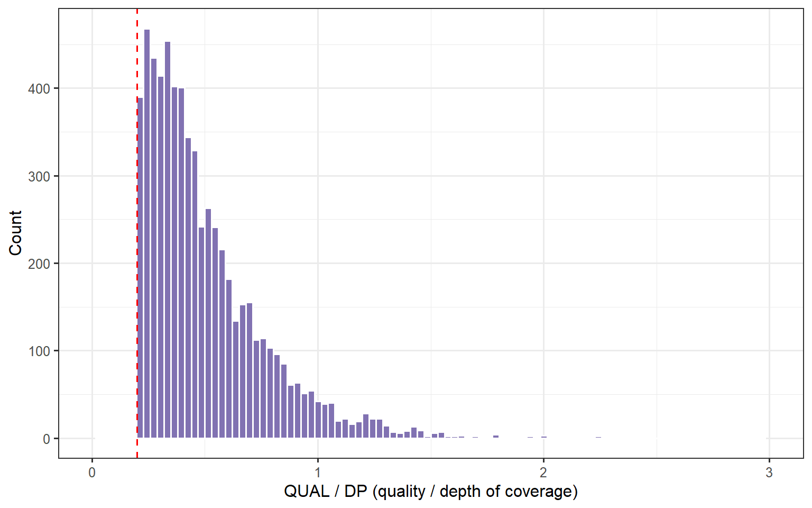
DP is the total number of sequencing reads covering a genomic position. Higher depth generally gives more confidence in a genotype call, since it’s supported by more independent reads, but very high depth at a locus can also indicate a mapping artefact (e.g. reads from a duplicated genomic region collapsing onto one location).
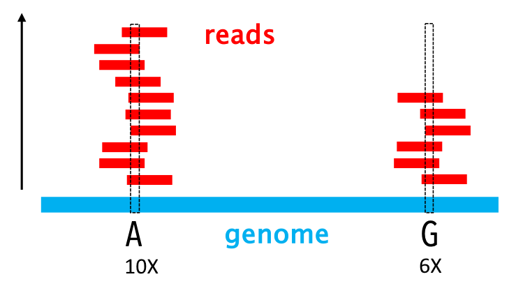
dp_df <- data.frame(DP = ourSNPs$DP_raw)
ggplot(dp_df, aes(x = DP)) +
geom_histogram(bins = 100, fill = "#8172B2", colour = "white") +
labs(title = "Read Depth (DP) Distribution", x = "Depth", y = "Count") +
theme_bw(base_size = 13)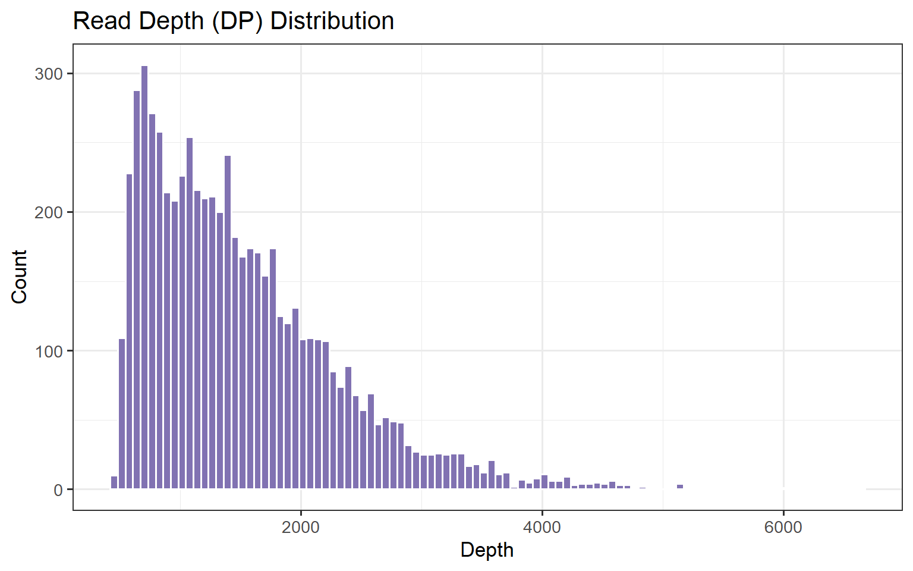
Depth per genotype call, trimmed to the 99th percentile (to avoid extreme outliers dominating the plot), with the mean and mean ± 2 SD marked as example filtering thresholds:
dp_per_genotype <- ourSNPs$DP_raw / ourSNPs$n_genotypes
dp_df <- data.frame(DP = dp_per_genotype)
dp_df <- dp_df[!is.na(dp_df$DP) & dp_df$DP < quantile(dp_df$DP, 0.99, na.rm = TRUE), ,
drop = FALSE]
dp_mean <- mean(dp_df$DP, na.rm = TRUE)
dp_mean2sd <- dp_mean + 3 * sd(dp_df$DP, na.rm = TRUE)
ggplot(dp_df, aes(x = DP)) +
geom_histogram(bins = 100, fill = "#8172B2", colour = "white") +
geom_vline(xintercept = c(6, dp_mean, 85), linetype = "dashed",
colour = c("red", "orange", "red")) +
labs(title = "Read Depth (DP) Distribution", x = "Depth", y = "Count") +
theme_bw(base_size = 13)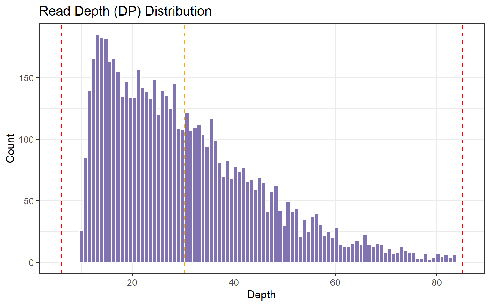
A genotype is “missing” when there weren’t enough good-quality reads to confidently call it. Common causes include degraded DNA, low sequencing depth, or loci that are inherently difficult to genotype (e.g. paralogous regions, primer/probe mismatch in target-capture or RAD data).
Per locus:
miss_var_df <- data.frame(Miss_pct = ourSNPs$missing)
ggplot(miss_var_df, aes(x = Miss_pct)) +
geom_histogram(bins = 50, fill = "#CCB974", colour = "white") +
geom_vline(xintercept = 20, linetype = "dashed", colour = "red") +
labs(title = "Missing Data per Variant", x = "Missing Genotypes (%)",
y = "Number of Variants") +
theme_bw(base_size = 13)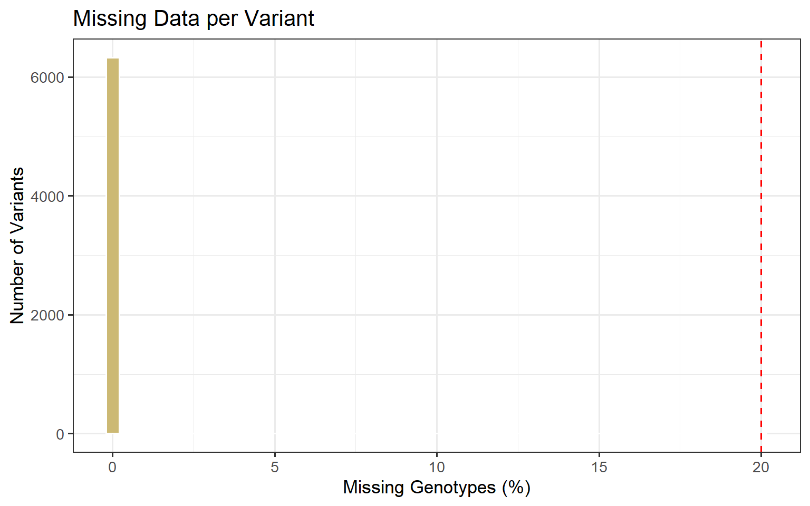
Per sample:
ourInd <- vcf2inddf(vcf)Genotype matrix dimensions:
Loci : 6328
Samples: 50
Individual heterozygosity summary:
Min. 1st Qu. Median Mean 3rd Qu. Max.
0.1854 0.2516 0.2616 0.2592 0.2678 0.2852 miss_df <- data.frame(Sample = ourInd$ID, Missing_pct = ourInd$miss_pct)
ggplot(miss_df, aes(x = reorder(Sample, -Missing_pct), y = Missing_pct)) +
geom_col(fill = "#8172B2") +
geom_hline(yintercept = 20, linetype = "dashed", colour = "red") +
labs(title = "Missing Genotypes per Sample", x = "Sample", y = "Missing (%)") +
theme_bw(base_size = 13) +
theme(axis.text.x = element_text(angle = 45, hjust = 1, size = 8))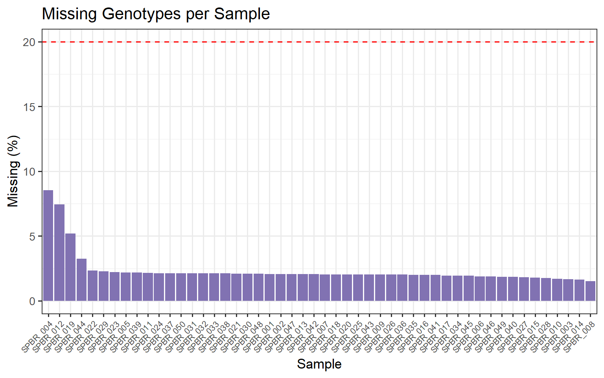
Samples or loci above your chosen threshold (here, 20%, marked with the dashed line) are usually flagged for removal before downstream analysis. High missingness at a locus often points to a technical problem with that marker across the whole dataset; high missingness in one individual more often points to a sample-quality problem (degraded DNA, low library yield) specific to that sample.
Reduced-representation data (e.g. RAD-seq/ddRAD) is expected to be distributed fairly evenly across the genome rather than concentrated in one or two regions — a strong departure from this can indicate reference assembly issues, repetitive/paralogous regions, or a biased restriction enzyme cut-site distribution.
chr_df <- ourSNPs %>%
count(CHROM) %>%
arrange(as.numeric(gsub("scaffold_", "", CHROM))) %>%
mutate(CHROM = factor(CHROM, levels = CHROM))
ggplot(chr_df, aes(x = CHROM, y = n, fill = CHROM)) +
geom_col(show.legend = FALSE) +
labs(title = "Variants per Chromosome", x = "Chromosome", y = "Count") +
theme_bw(base_size = 13) +
theme(axis.text.x = element_text(angle = 45, hjust = 1))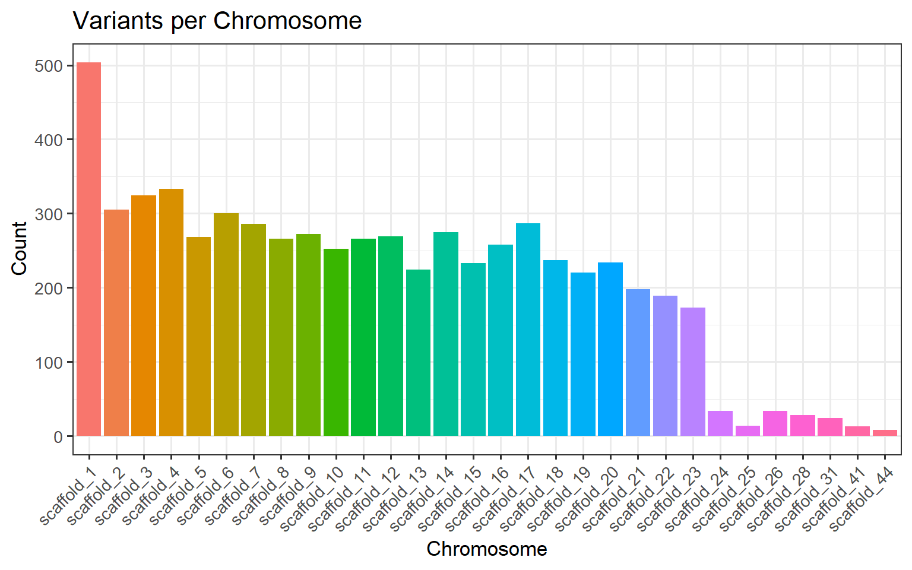
Genetic diversity within a population underpins its capacity to respond to environmental change, disease, and other selective pressures, and therefore it’s a central concept in both evolutionary biology and conservation genetics. Three standard measures:
Allelic diversity
Nucleotide diveristy
Observed heterozygosity (HO): the proportion of individuals that are heterozygous at a locus, directly counted from the genotypes.
Expected heterozygosity (HE): the heterozygosity expected under Hardy-Weinberg equilibrium, calculated from allele frequencies. hierfstat::basic.stats() reports this as Hs.
Inbreeding coefficient (FIS): the standardised difference between expected and observed heterozygosity: \[F_{IS} = 1 - \frac{H_O}{H_E}\] Positive FIS (heterozygote deficit) can indicate inbreeding, assortative mating, or population substructure (a Wahlund effect). Negative FIS (heterozygote excess) can indicate outbreeding, disassortative mating, or balancing selection.
gi <- vcfR2genind(vcf)
pop(gi) <- as.factor(rep("pop1", nInd(gi)))
stats <- basic.stats(gi)
stats$overall[c("Ho", "Hs", "Fis")] Ho Hs Fis
0.2592 0.2448 -0.0587 ggplot(stats$perloc, aes(x = Hs)) +
geom_histogram(bins = 20, fill = "steelblue", colour = "white") +
geom_vline(xintercept = 0.75, linetype = "dashed", colour = "red") +
labs(title = "Expected heterozygosity per locus", x = "He",
y = "Number of Variants") +
theme_bw(base_size = 13)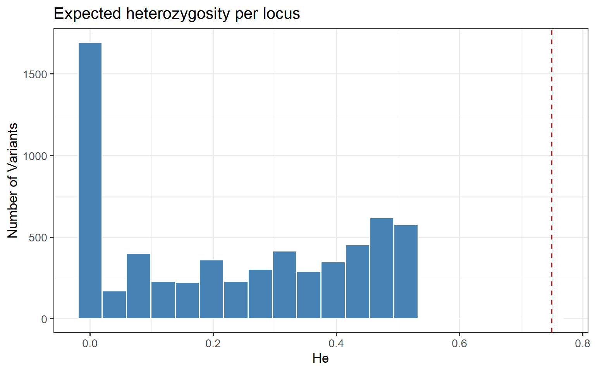
ggplot(stats$perloc, aes(x = Ho)) +
geom_histogram(bins = 20, fill = "steelblue", colour = "white") +
geom_vline(xintercept = 0.75, linetype = "dashed", colour = "red") +
labs(title = "Observed heterozygosity per locus", x = "Ho",
y = "Number of Variants") +
theme_bw(base_size = 13)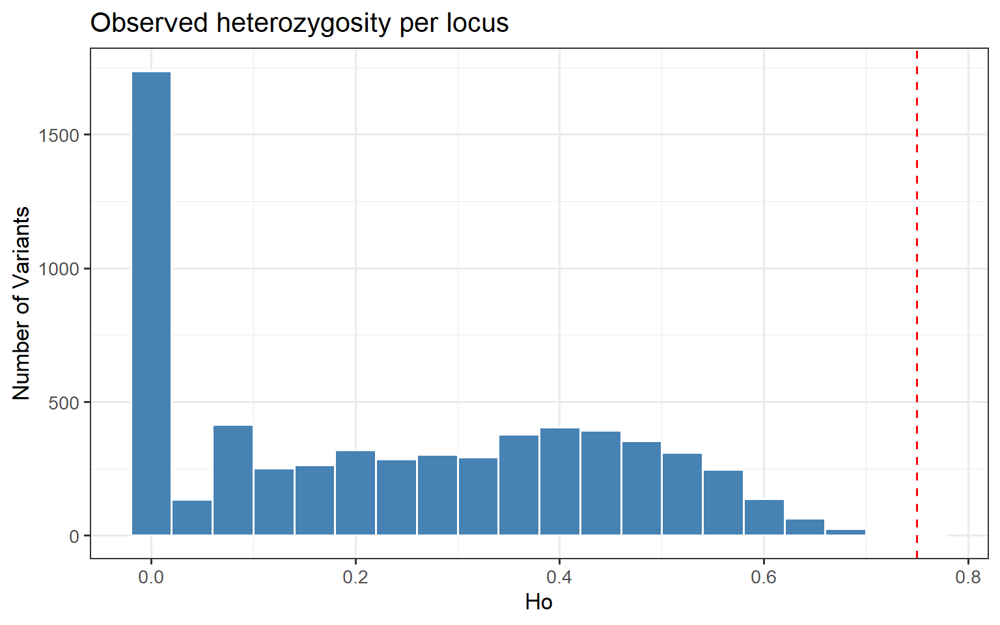
ggplot(stats$perloc, aes(x = Fis)) +
geom_histogram(bins = 20, fill = "steelblue", colour = "white") +
geom_vline(xintercept = 0.5, linetype = "dashed", colour = "red") +
labs(title = "Inbreeding index per locus (Fis)", x = "Fis",
y = "Number of Variants") +
theme_bw(base_size = 13)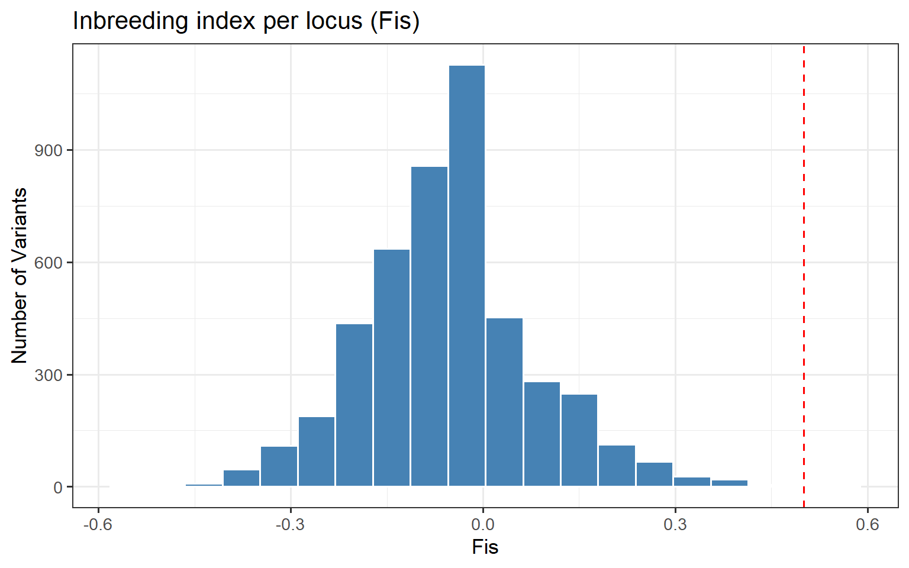
A handful of loci with extreme HO, HE, or FIS values relative to the rest of the genome is expected by chance. But loci that are very far outliers are also often flagged as candidates for genotyping error (e.g. null alleles causing spuriously high FIS) or for being under selection, rather than reflecting neutral demographic processes alone — worth keeping in mind if any of these loci turn out to matter for later analyses.
df_ihe <- ourInd[order(ourInd$Ho), ]
df_ihe$ID <- factor(df_ihe$ID, levels = df_ihe$ID)
mean_ho <- mean(df_ihe$Ho, na.rm = TRUE)
ggplot(df_ihe, aes(x = ID, y = Ho)) +
geom_col(fill = "steelblue", colour = "white") +
geom_hline(yintercept = mean_ho, colour = "tomato", linetype = "dashed",
linewidth = 0.8) +
annotate("text", x = nrow(df_ihe), y = mean_ho * 1.05,
label = paste("Mean =", round(mean_ho, 3)),
colour = "tomato", hjust = 1, size = 3.5) +
labs(title = "Observed heterozygosity per individual", x = "Sample",
y = "Ho (proportion of heterozygous loci)") +
theme_classic() +
theme(axis.text.x = element_text(angle = 90, vjust = 0.5, hjust = 1, size = 8),
plot.title = element_text(hjust = 0.5, face = "bold"))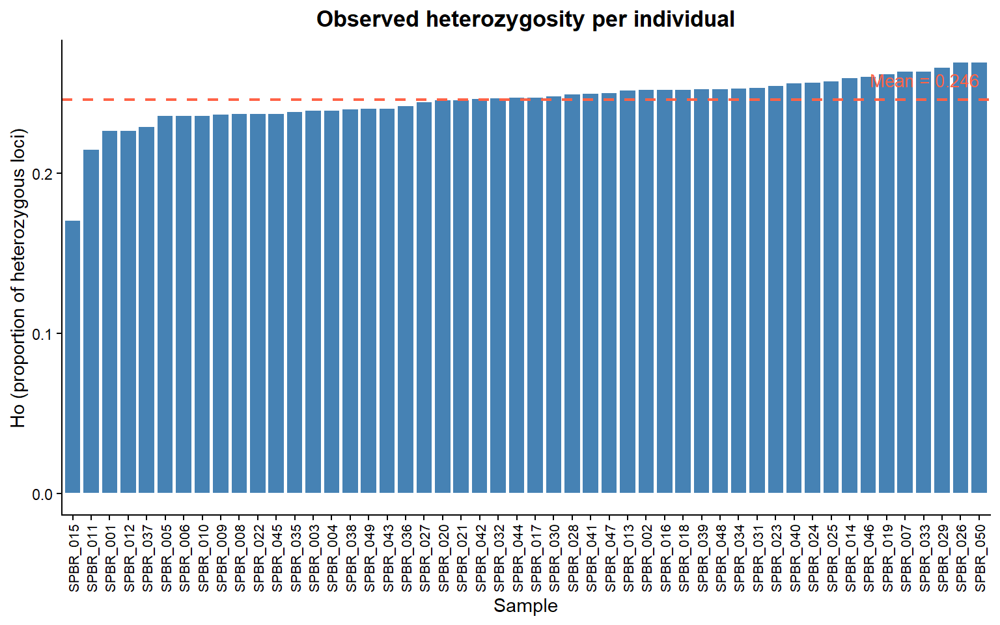
Individuals well below the population mean may be inbred (offspring of related parents) or come from a small/isolated subpopulation. Individuals well above the mean can indicate recent admixture between distinct genetic groups, or occasionally sample contamination, always worth cross-checking against the individual inbreeding coefficient below before drawing conclusions.
Before you close RStudio, save all the resutls:
save.image("CEG_CopLab.RData")To start we neeed to load all the packages and the data from our previous session:
While FIS above summarises heterozygote deficit at population level, we can also estimate an inbreeding coefficient (F) for each individual. This measures the proportion of an individual’s genome that is more homozygous than expected because the two copies of a gene are likely to have been inherited from a common ancestor (identical by descent). In other words, it indicates the extent to which an individual has increased homozygosity due to mating between related individuals (e.g., related parents).
The file name: R:\CSE-Molecular Ecology\Yuma\Lecturs\BIOD3701_2026\Practice\vcf-tutorial\Captive-management-and-restoration-genetics-series-2026\SPBR_50_6328.gds
The total number of samples: 50
The total number of SNPs: 6328
SNP genotypes are stored in SNP-major mode (Sample X SNP).SNPs on first 24 scaffolds/chromosomes: 6207 Estimating individual inbreeding coefficients:
Excluding 0 SNP (monomorphic: TRUE, MAF: NaN, missing rate: NaN)
# of samples: 50
# of SNPs: 6,207
using 1 thread/core
[..................................................] 0%, ETC: ---
[==================================================] 100%, completed, 0s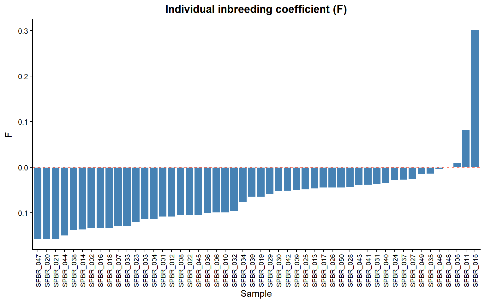
Individuals below 0 are some how outbred (offspring of genetically very different parents) or come from different subpopulation. Individuals above 0 indicate some level of inbreeding, values above 0.1 are consisten with recent inbreeding, while values around and about 0.25 are expected for offspring of full-sibling or parent-offspring mating
vcfR, SNPRelate, hierfstat, and dartR documentation are the best next stop for parameter details on any function used in this labswingeR package repository (linked above) documents all swingeR() parameters in full